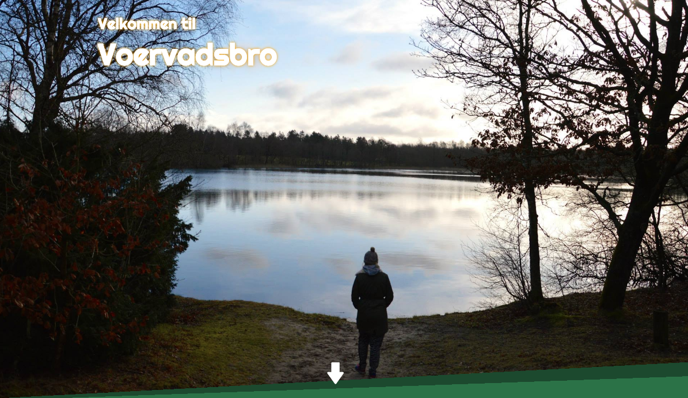
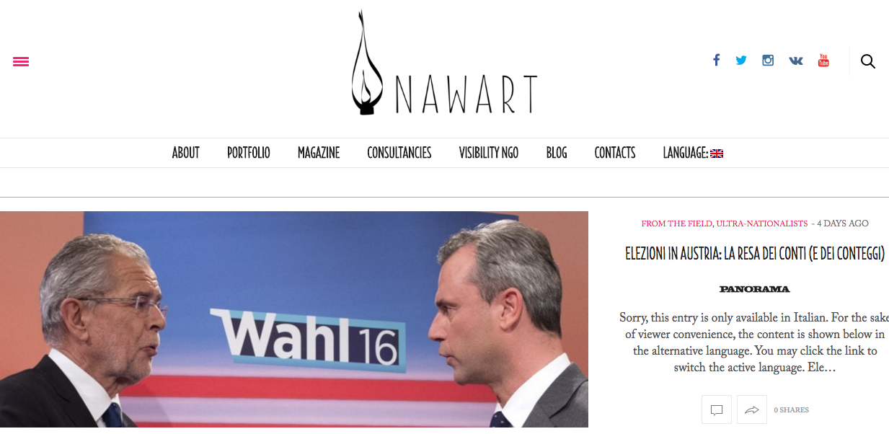
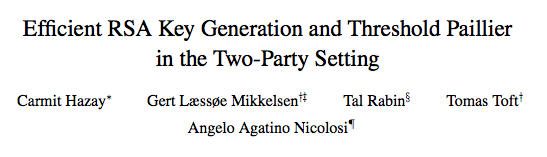
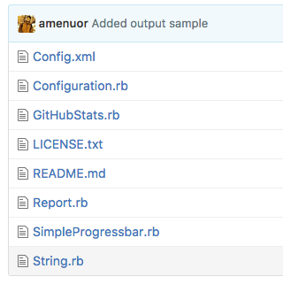
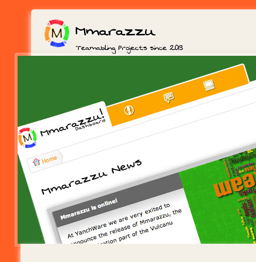

Voervadsbro.dk
Landsbyforeningen for Voervadsbro og Omegn er en lille forening for nuværende og tidligere indbyggere i Voervadsbro. Foreningen blev dannet i 1988, da Brugsen i Voervadsbro blev nedlagt og overskuddet ved salget af bygningerne blev overdraget til den nydannede forening..

NawartPress.com
Nawart is a collective of independent reporters and an association based on the idea of turning its members’ individual workload into an innovative ground for intellectual, human and professional exchange.
Efficient RSA Key Generation Protocol in the Two-Party Setting
The goal of this thesis is the implementation of a fully distributed multiparty computation protocol in a Two-Party setting, secure in the semi-honest model. For each single step in the protocol is expected the participation of two and only two parties. This is among the first implementations of a complete distributed protocol for RSA Composite generation in this setting, on top of which several Secure Multiparty Computation protocols have also been implemented.

Efficient RSA Key Generation and Threshold Paillier
in the Two-Party Setting
The problem of generating an RSA composite in a distributed manner without leaking its factorization is particularly challenging and useful in many cryptographic protocols. Our first contribution is the first non-generic fully simulatable protocol for distributively generating an RSA composite with security against malicious behavior. Our second contribution is complete Paillier threshold encryption scheme in the two-party setting with security against malicious behavior. Furthermore, we describe how to extend our protocols to the multiparty setting with dishonest majority.

GitHub Stats
The GitHubStats is a simple script used in order to get statistics on closed issues related to some well defined repositories. The script need to be configured before use. At completition the script emails the report to the specified recipient.

Mmarazzu
Mmarazzu is a social collaboration platform for publicly developing creative ideas! Plan a road trip, work on an assignment, or develop new software while sharing your achievements and attracting interested people!

Social Gap
SocialGap is a simple library intended to ease the integration of PhoneGap hybrid mobile apps with social networks.

Social